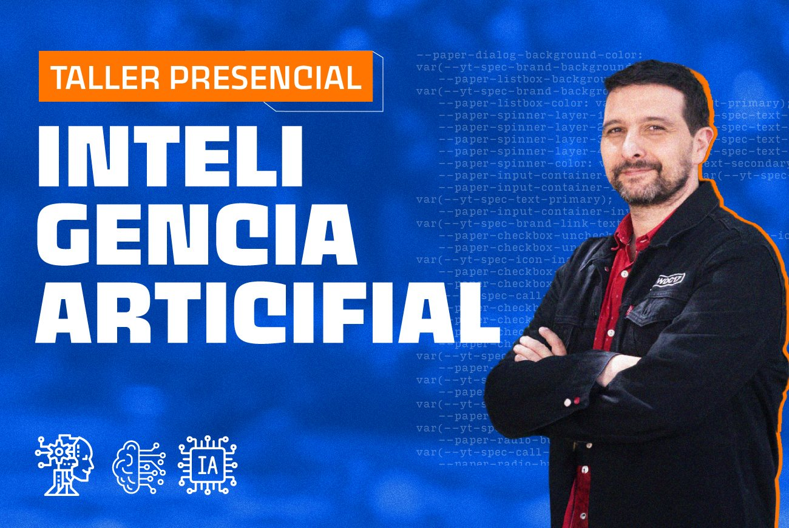
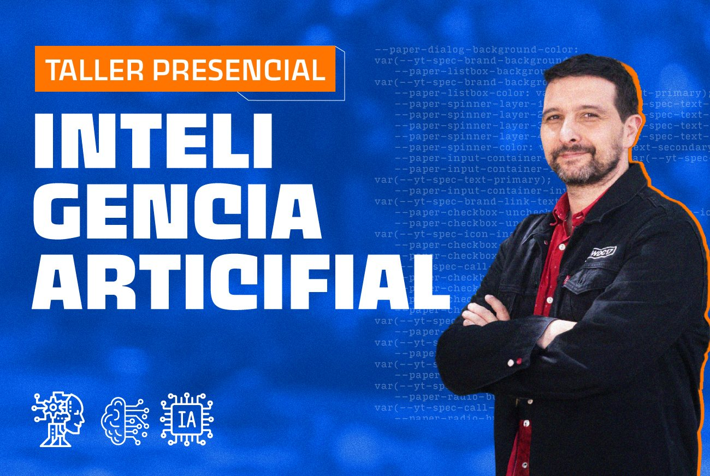

razones
la razón principal de estudiar desarrollo web es un campo que esta en bastante crecimiento con una alta demanda de profesionales, y estudiar a través de nodo me permite combinar mis habilidades técnicas, la creatividad y la autonomía todo esto a través de equipo de trabajo colaborativo ya que no solo aprender, sino que es aprender a trabajar en equipo.


 
